Lavadeiras utilizavam o sabão de cinzas para a limpeza de suas roupas.
Coleção particular
Os compostos saponáceos são indispensáveis na salubridade da sociedade, pois são os agentes principais nos processos de remoção de óleos, gorduras e microrganismos. Conforme uma lenda romana, supostamente no Monte Sapo (que dá
origem ao nome sabão), restos de gordura de animais queimados em fogueiras se misturavam às cinzas alcalinas de madeira e, quando chovia, a reação resultava no sabão de cinzas. Ele escorria ao longo da beira argilosa do rio
Tibre, onde lavadeiras usavam-no e comprovaram sua eficácia na limpeza [...]. Ao longo do tempo, a experimentação popular aperfeiçoou os sabões produzidos ao acaso, revelando um significativo avanço histórico no combate e prevenção
de doenças, e passou a ser objeto de interesse político e econômico no contexto da revolução francesa, em que a síntese de hidróxido de sódio permitiu a substituição da produção artesanal de sabão de cinzas pela produção industrial
de sabão de soda. [...]
MASSI, L.; JUNIOR, C. S. L. “Produção de Sabão no Assentamento Rural Monte Alegre: Aspectos Didáticos, Sociais e Ambientais.”
Química Nova na Escola , Vol. 41, N° 2, p. 124-132, maio 2019. Disponível em: <http://qnesc.sbq.org.br/online/qnesc41_2/03-QS-66-18.png>. Acesso em: 4 ago. 2021.
Ao realizarmos o teste de Arrhenius, o brilho gerado em uma lâmpada quando se utiliza uma solução de NaOH é igual ao gerado por uma solução de Mg(OH)
2 ?
Quais são o nome e a fórmula do íon característico de uma base?
Segundo Arrhenius, bases são compostos iônicos que, em solução aquosa, dissociam-se, gerando como ânion o íon OH
– (íon hidroxila). São classificadas como soluções eletrolíticas por apresentarem íons livres em solução aquosa.
Uma substância básica também é conhecida como
álcalis , palavra originada do árabe
al-qali , que significa “cinza de plantas”, mistura rica em substâncias de propriedades básicas.
Para montar a fórmula geral de uma base, por se tratar de um composto iônico, o cátion é colocado na frente do ânion. Todas as bases apresentam metais como cátion, exceto o hidróxido de amônio (NH
4 OH), que é a única base formada apenas por ametais. Utilizaremos a “
regra do escorregador ” estudada nos compostos iônicos para montarmos a fórmula geral de uma base, uma vez que a montagem é feita a partir das cargas de seus íons.
O
ânion hidroxila sempre apresenta
carga 21 .
O oxigênio contém seis elétrons na camada de valência e realiza uma ligação covalente simples com o hidrogênio, faltando ainda mais uma ligação para ele completar o octeto.
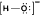
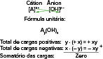
Toda vez que a carga do metal for diferente de 1, colocaremos a hidroxila entre parênteses e o número que representa a carga do cátion para fora desses parênteses. Veja a seguir alguns exemplos de dissociação de bases:
NaOH(s)
Na
+ (aq)
+
OH
– (aq)
Mg(OH)
2 (s)
Mg
2+ (aq)
+
2 OH
– (aq)
A
ℓ
(OH)
3 (s)
A
ℓ3+ (aq)
+
3 OH
– (aq)
Sn(OH)
4 (s)
Sn
4+ (aq)
+
4 OH
– (aq)
NH
4 OH(aq)
NH
4+ (aq)
+
OH
– (aq)
Classificação das bases
As bases podem ser classificadas de acordo com alguns critérios. Na sequência, vamos estudar alguns deles.
Quanto ao número de hidroxilas
Diferentemente do que ocorria nos ácidos, todas as hidroxilas das bases são dissociáveis. Assim, teremos:
De acordo com a solubilidade em água, as bases podem ser classificadas em:
Solúveis: bases formadas por cátions dos metais da família IA ou pelo íon amônio (NH
4+ ).
Parcialmente solúveis:bases formadas pelos metais da família IIA (exceto Be e Mg, que são insolúveis).
Insolúveis: bases formadas pelos demais metais presentes na tabela periódica.
Quanto à força
A força de uma base, assim como a dos ácidos, está relacionada com sua capacidade de sofrer dissociação. Assim, podemos quantificar a força de uma base ao acharmos a razão entre o número de moléculas que de fato dissociaram e o número de moléculas inicial,
o que gera como resposta o grau de dissociação da base, representado pela letra grega alfa (
a
).
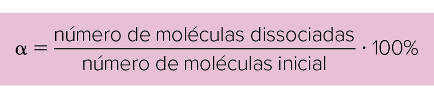
Sendo:
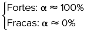
No entanto, podemos classificar a força de uma base de maneira qualitativa, sem calcularmos seu grau de dissociação. Para isso, existem algumas regras práticas:
Fortes:são bases com elevado grau de dissociação, pois os íons que dissolvem se dissociam bem, e são formadas pelos metais das famílias IA e IIA (exceto Be e Mg, que formam bases fracas). Exemplos: NaOH, KOH, Ca(OH)
2 .
Fracas: são bases com baixo grau de dissociação, pois os íons que dissolvem se dissociam mal, e são formadas pelos demais metais presentes na tabela periódica, incluindo o NH
4 OH. Exemplos: CuOH, A
ℓ
(OH)
3 , Pb(OH)
4 .
Quanto à volatilidade
A volatilidade, estudada no capítulo 2 (em que tratamos dos ácidos), é a capacidade que uma substância tem de evaporar. Assim, quanto mais volátil ela for, menor será sua temperatura de ebulição e maior será sua pressão de vapor.
A única base classificada como volátil é o hidróxido de amônio (NH
4 OH), pois a
amônia (NH
3 ) sofre ionização ao ser dissolvida em água, produzindo o íon hidroxila. O íon NH
4+ é denominado
amônio . O hidróxido de amônio somente existe em solução aquosa.
Nomenclatura
A nomenclatura das bases apresenta regras bem definidas. Em uma ligação iônica, há cátions metálicos que sempre apresentam a mesma carga; no entanto, alguns deles (na maioria, de metais de transição) apresentam cargas variáveis,
e a regra do octeto não se aplica para explicar essas cargas.
Para cátions com carga fixa
Quando os cátions apresentam carga fixa, ela não é mencionada no nome da base. A carga representa o número de elétrons que o elemento químico tem na camada de valência e essa carga pode ser obtida consultando a família na qual
ele está localizado na tabela periódica ou realizando a distribuição eletrônica de acordo com o Diagrama de Linus Pauling.
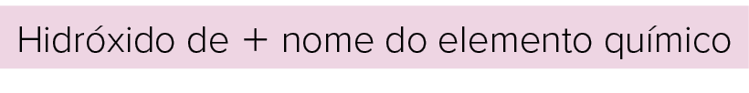
O
cátion amônio sempre apresenta
carga 11 .
O nitrogênio apresenta cinco elétrons na camada de valência e realiza três ligações covalentes simples com três hidrogênios e uma coordenada com um hidrogênio; como a coordenada representa um par de elétrons compartilhado e o hidrogênio só precisaria
receber um elétron para ele completar o octeto, a carga é
+
1.
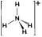
Hidróxido de
+
nome do elemento químico
NaOH: hidróxido de sódio
KOH: hidróxido de potássio
Ca(OH)
2 : hidróxido de cálcio
Mg(OH)
2 : hidróxido de magnésio
A
ℓ
(OH)
3 : hidróxido de alumínio
NH
4 OH: hidróxido de amônio
AgOH: hidróxido de prata
Zn(OH)
2 : hidróxido de zinco
Cd(OH)
2 : hidróxido de cádmio
Para cátions com carga variável
Quando os cátions apresentam carga variável, esta deve ser mencionada no nome da base de acordo com uma das maneiras a seguir:
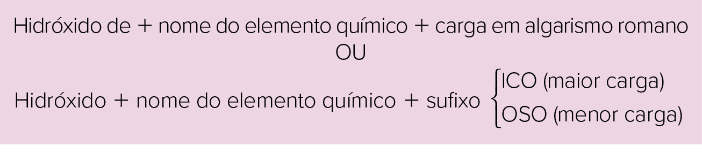
Vamos utilizar como exemplo o cátion de ferro. Ele apresenta carga variável:
+
2 (menor valor de carga) e
+
3 (maior valor de carga). Assim, temos as seguintes bases que podem ser formadas:
Fe(OH)
2 : hidróxido de ferro(II) ou hidróxido ferroso
Fe(OH)
3 : hidróxido de ferro(III) ou hidróxido férrico
Outros exemplos de bases formadas por cátions com carga variável:
CuOH: hidróxido de cobre(I) ou hidróxido cuproso (Cu
=cuprum em latim)
Cu(OH)
2 : hidróxido de cobre(II) ou hidróxido cúprico
AuOH: hidróxido de ouro(I) ou hidróxido auroso (Au
=aurum em latim)
Au(OH)
3 : hidróxido de ouro(III) ou hidróxido áurico
Sn(OH)
2 : hidróxido de estanho(II) ou hidróxido estanoso
Sn(OH)
4 : hidróxido de estanho(IV) ou hidróxido estânico
Pb(OH)
2 : hidróxido de chumbo(II) ou hidróxido plumboso (Pb
=plumbum em latim)
Pb(OH)
4 : hidróxido de chumbo(IV) ou hidróxido plúmbico
Hg
2 (OH)
2 : hidróxido de mercúrio(I) ou hidróxido mercuroso
Hg(OH)
2 : hidróxido de mercúrio(II) ou hidróxido mercúrico
...excretas é a designação biológica empregada aos resíduos nitrogenados produzidos pelo metabolismo, devendo ser eliminados a fim de permitir um estado de equilíbrio interno (homeostase) do organismo [...]O tipo de excreção de uma dessas substâncias
tóxicas está diretamente relacionado com a quantidade de água disponível na composição corpórea de cada ser vivo, como também associado ao ambiente onde ele habita.
Classificação quanto ao tipo de excreta:
Amoniotélicos (animais que excretam amônia)
➝
essa substância é extremamente tóxica aos organismos, sendo a alta solubilidade em água uma propriedade química considerável durante a evolução, principalmente dos invertebrados aquáticos e peixes ósseos.
Ureotélicos (animais que excretam ureia)
➝
substância solúvel em água, contudo menos tóxica que a amônia. Sintetizada no fígado dos vertebrados a partir da reação da amônia e o gás carbônico, representa uma estratégia adaptativa de certos animais terrestres: os anelídeos, os peixes cartilaginosos
[tubarão e raia], os anfíbios [na fase adulta, pois na fase de girino excretam amônia, uma vez que vivem na água] e os mamíferos.
Uricotélicos (animais que excretam ácido úrico)
➝
substância de toxicidade baixa e insolúvel em água, [...] utilizada pelos insetos, répteis e aves.
RIBEIRO, Krukembergue Divino Kirk da Fonseca. “Os tipos de excretas”. Mundo educação. Disponível em: <https://mundoeducacao.bol.uol.com.br/biologia/os-tipos-excretas.htm>. Acesso em: 14 jul. 2021.
Na tabela a seguir, encontramos os elementos químicos com carga variável:
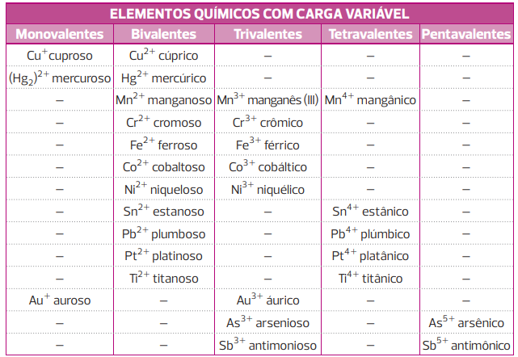
Aplicações no cotidiano
A seguir, temos exemplos de aplicações de algumas bases estudadas:
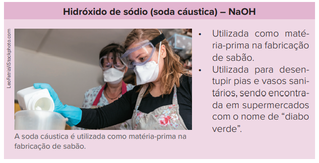
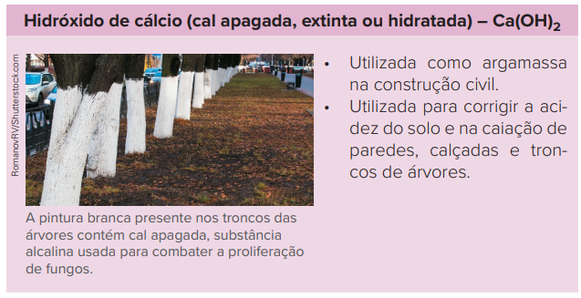
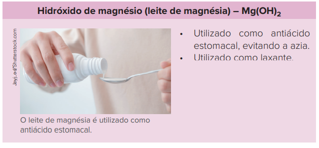
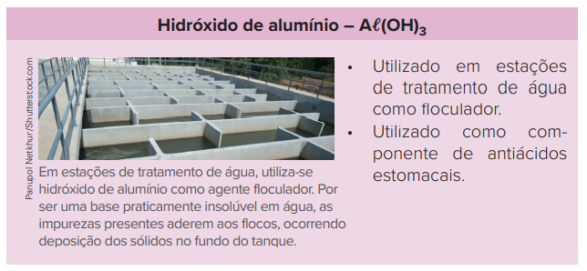
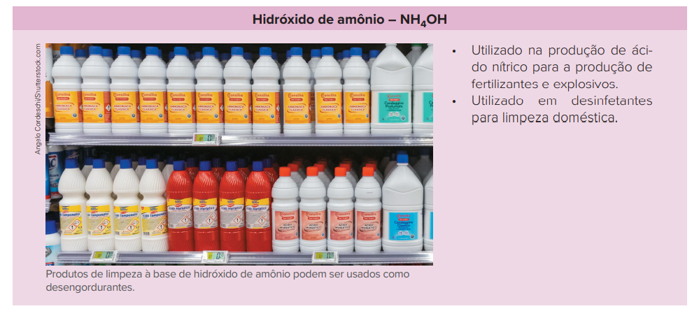
Escala de pH
Sabemos que o suco de limão, o suco de tomate, o suco de laranja, o cafezinho e o vinagre são exemplos de substâncias ácidas; porém, você saberia dizer qual delas é a mais ácida?
O grau de acidez ou basicidade de uma solução pode ser expresso por meio da escala de pH (potencial hidrogeniônico), que será estudada com detalhes na terceira série do Ensino Médio. Por ora, vamos explorá-la, na figura a seguir,
para termos uma noção do grau de acidez/basicidade de uma solução.
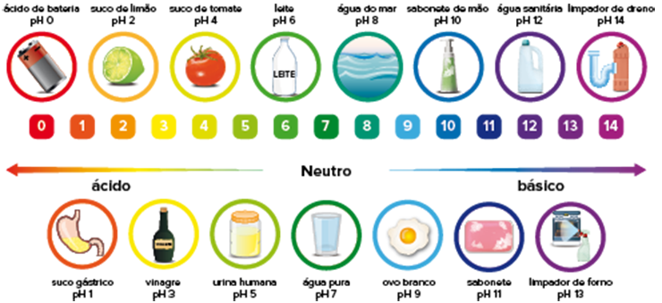
Escala de pH com exemplos de aplicação em cada valor.
A escala varia de 0 a 14 a 25
°
C, sendo que as soluções ácidas apresentam pH
<
7, as soluções neutras apresentam pH
=
7, e as soluções básicas, pH
>
7. Quanto mais próximo de um valor extremo da escala, mais intenso é o caráter daquele meio. Por exemplo, um suco de limão (pH
=
2) tem maior acidez que um suco de tomate (pH
=
4).
O pHmetro é um aparelho utilizado para medir o pH.
tonaquatici/iStockphoto.com
Papel indicador universal utilizado para medir o pH por comparação com a escala de referência.
deyangeorgiev/iStockphoto.com
A medida exata do pH é realizada por meio de um aparelho eletrônico digital chamado pHmetro (lê-se “peagômetro”), representado na figura ao lado. Pode-se utilizar ainda o papel indicador universal, uma tira que é mergulhada
na solução de interesse de cálculo do pH e comparada com uma escala colorida de referência para se ter ideia do pH da solução.
Medir o pH de soluções é algo muito comum em diversas aplicações práticas, como em análises da qualidade da água presente nas piscinas, em procedimentos de controle de qualidade ambiental de rios, em diversos procedimentos utilizados na agronomia e no
controle de qualidade de alimentos e produtos de limpeza. Nas piscinas, é comum o uso de
kits que medem a quantidade de cloro e o pH da piscina. A quantidade de cloro é medida em uma grandeza conhecida como parte por milhão (ppm) e é utilizado o reagente orto-tolidina; para analisar o pH, é utilizado o reagente
vermelho fenol.
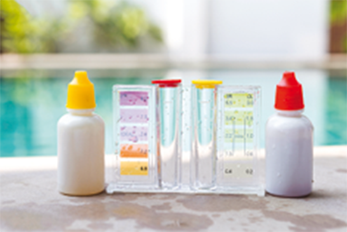
Kit utilizado em piscinas para medir o teor de cloro e o pH da água.
Sirirak/iStockphoto.com
Indicadores ácido-base
Indicadores são substâncias que indicam o caráter do meio (ácido, básico ou neutro) por meio da mudança de coloração. Eles podem ser caseiros (como o extrato de repolho roxo, plantas de flores – como hortênsias –, vinho
tinto, vinagre etc.) ou laboratoriais (papel de tornassol, fenolftaleína, azul de bromotimol etc.), sendo os laboratoriais mais precisos do que os caseiros.
No laboratório, quando uma solução muda de cor, dizemos que ela atingiu seu
ponto de viragem . Esse ponto varia de acordo com o indicador utilizado. A fenolftaleína, por exemplo, apresenta ponto de viragem entre o pH 8 e 10; já o azul de bromotimol, entre o pH 6,2 e 7,6.
No quadro a seguir, podemos verificar a cor característica de cada indicador quando presente em meio ácido, básico e neutro:
Mais
Sangue do diabo (tinta que desaparece – EXPERIÊNCIA QUÍMICA), Manual do mundo.
O vídeo mostra como fazer a experiência chamada “sangue do diabo”, que envolve uma base – o NH
4 OH. Trata-se de uma forma divertida de colocar em prática o que estudamos até agora sobre as bases inorgânicas.
Ulbra-RS 2016 No capítulo Recreações Químicas, Sacks descreve suas primeiras incursões na experimentação química, como no texto abaixo.
O livro começava com Experimentos Elementares, usando tintas vegetais para vermos como mudavam de cor na presença de ácidos e álcalis. A tinta vegetal mais comum era o tornassol, retirado de um líquen [...]. Usei papéis de
tornassol que meu pai tinha em sua farmácia, e vi que se tornavam vermelhos com diferentes ácidos e azuis com amônia alcalina.
(SACKS, O.
Tio Tungstênio: Memórias de uma infância química . São Paulo: Cia. das Letras, 2002).
O uso de tornassol ainda é bastante comum nas aulas de Química. Testando os seguintes sistemas:
solução aquosa de CH
3 COOH
solução aquosa de CH
3 NH
2
solução aquosa de NaOH
olução aquosa contendo CO
2 dissolvido
solução aquosa de H
2 SO
4
A cor resultante do papel tornassol será, respectivamente:
Azul; azul; vermelho; vermelho; azul.
Vermelho; vermelho; azul; vermelho; azul.
Vermelho; vermelho; vermelho; azul; vermelho.
Azul; azul; azul; vermelho; vermelho.
Vermelho; azul; azul; vermelho; vermelho.
Resolução:
Alternativa e
As soluções I (ácido acético), IV (dióxido de carbono) e V (ácido sulfúrico) são compostos que apresentam caráter ácido; portanto, o papel de tornassol ficará vermelho. Vale lembrar que o ácido carbônico é instável e se decompõe
em água e dióxido de carbono.
As soluções II e III, metanoamina e hidróxido de sódio, são compostos que apresentam caráter básico; portanto, o papel de tornassol ficará azul. A metanoamina é um composto orgânico que deriva da amônia (NH
3 ), que, em solução aquosa, produz a base NH
4 OH.
Aplicando conhecimentos
1
Segundo Arrhenius, o que são bases?
2
Escreva a equação da reação de dissociação para as bases, nomeie-as e classifique-as quanto à força e à solubilidade.
KOH
Ca(OH)
2
Fe(OH)
3
Pb(OH)
4
3
Apenas uma base é classificada como volátil. Escreva a fórmula dessa base, seu nome e a equação da sua reação de ionização.
4
Em uma aula de laboratório, foi realizado um experimento visando testar a condutividade elétrica de duas bases: hidróxido de sódio (conhecida como soda cáustica) e hidróxido de magnésio (conhecida como leite de magnésia). O
professor utilizou um dispositivo para medição da condutividade como o mostrado a seguir.
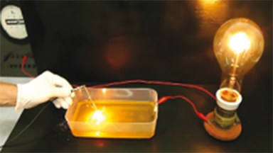
Para isso, foram adicionados a dois béqueres 100 mL de água a 20 ºC e, em cada um, 5 g de cada uma das bases.
O brilho observado na lâmpada foi diferente, apesar dos dois testes terem sido realizados com bases. Como pode ser justificado o resultado observado?
Consolidando saberes
1
Cefet-MG 2020 Em um frasco contendo água, foi colocado, cuidadosamente, uma pequena porção de sódio (Na) metálico. Durante a reação, observou-se a liberação de um gás inflamável e a formação de uma substância que coloriu
uma solução de fenolftaleína. Sobre o experimento, é INCORRETO afirmar que
o gás liberado foi o O
2 .
a substância produzida é iônica.
a solução final pode ser neutralizada com um ácido.
a solução adquiriu coloração rósea após adição de fenolftaleína.
2
UFJF-MG 2019 As reações ácido-base são reações importantes pelas suas inúmeras aplicações. Por exemplo, pessoas que sofrem com acidez estomacal são beneficiadas diariamente por este tipo de reação química. Evidentemente,
excessos podem ser prejudiciais. Várias preparações farmacêuticas de antiácidos incluem as bases hidróxido de magnésio e hidróxido de alumínio para diminuir o excesso de ácido clorídrico do estômago. Baseado neste texto,
responda:
Dê a fórmula química de todos os compostos inorgânicos citados no texto.
Ácidos de Arrhenius são conhecidos por liberar íons H
+ em solução aquosa.
Bases de Arrhenius são espécies capazes de liberar íons OH
– em água.
O ácido sulfúrico 98% é um ótimo condutor de eletricidade.
Quanto maior o grau de ionização de um ácido, maior será sua força.
Dentre as afirmativas, são
CORRETAS apenas:
I, II e IV
II e IV
II, III e IV
I e II
4
Leia o texto a seguir e responda aos subitens.
Fiscalização interdita frigorífico após acidente com vazamento de amônia
A Prefeitura de Porto Ferreira (SP) interditou nesta terça-feira (21) o frigorífico Porto Aves por falta de documentos de segurança. Um vazamento de amônia (NH
3 ) no local provocou a intoxicação de 15 funcionários na manhã de segunda-feira (20). [...]
[O funcionário Adilson Ferreira] disse que não é a primeira vez que esse tipo de acidente acontece e que todos trabalham sem equipamentos de proteção. “Eu acho que deveria ter umas máscaras lá dentro porque é um lugar que
tem gás tóxico”. [...]
O acidente aconteceu na sala de máquinas durante um procedimento corriqueiro, informou o gerente da empresa. “Foi resolvido de imediato, mas a amônia leva alguns minutos para dissipar. Por segurança, evacuamos toda a área
e dispensamos os funcionários” [...]
“Fiscalização interdita frigorífico após acidente com vazamento de amônia”.
EPTV , 21 jan. 2014. Disponível em: <http://g1.globo.com/sp/sao-carlos-regiao/noticia/2014/01/fiscalizacao-interdita-frigorifico-apos-acidente-com-vazamento-de-amonia.html>. Acesso em: 14 jul. 2021.
A substância descrita no texto nas condições ambientes correntes é encontrada em estado gasoso, mas, quando dissolvida em água, apresenta caráter básico. Justifique o caráter básico da amônia com o auxílio de uma equação química.
Represente a fórmula eletrônica para a substância gasosa mencionada no texto.
Dados:
5
UEG-GO
Sangue de mentirinha!
De tanto assistir a filmes de terror, ou mesmo a filmes de ação, nos quais o mocinho tem sempre que apanhar primeiro, cabe sempre uma constatação e ao mesmo tempo uma pergunta: “Nossa, quanto sangue!”. É claro, tudo
é de mentirinha, mas, na maioria das vezes (quando não há efeitos especiais), os diretores de filmes recorrem ao velho truque do sangue de mentirinha
Uma forma de fazê-lo, sem manchar roupas, é medir 6 mL de água e 1 mL de detergente com amoníaco (amônia) e adicionar, com um conta-gotas, de 2 a 3 gotas de fenolftaleína, e colocar a solução num frasco de
spray (do tipo desodorante). Ao borrifar a mistura num tecido branco, ele fica imediatamente manchado de vermelho. Aos poucos a mancha desaparece.